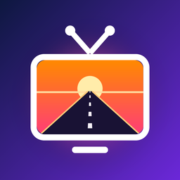
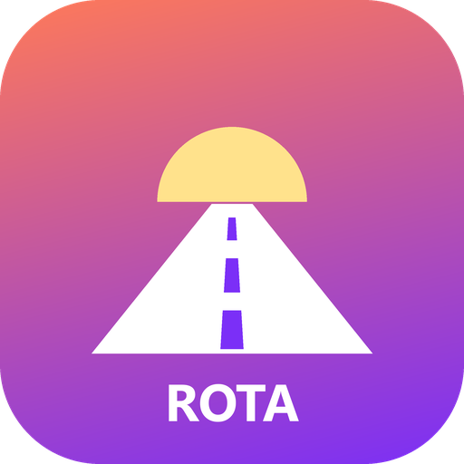
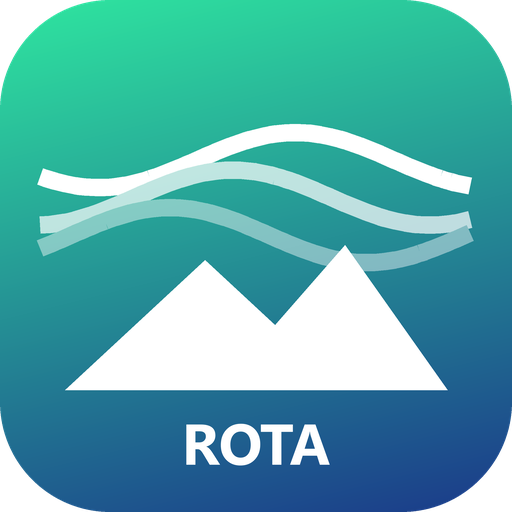
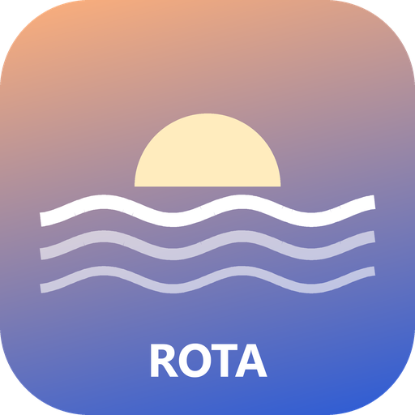
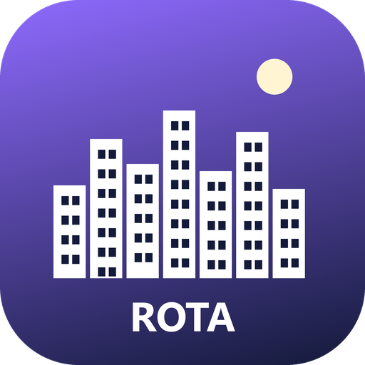
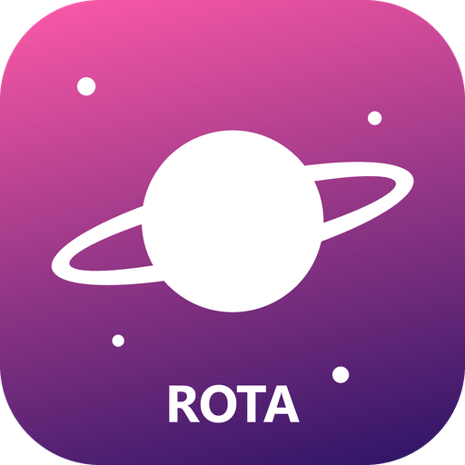
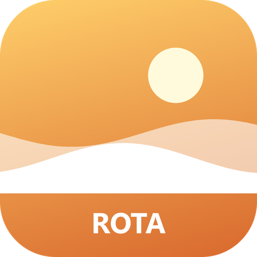
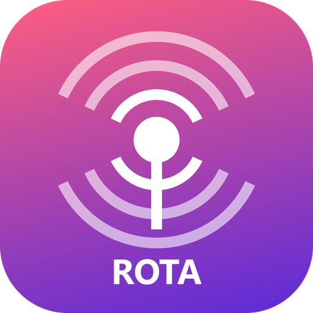

RotaTV demo channels
Original channels, films, a series and a radio station made for the RotaTV app, so anyone can try it without a TV provider. In the app, tap “Try the demo channels”.
Playlist: https://kaan2635.github.io/rotatv-demo/demo.m3u
Türkçe: https://kaan2635.github.io/rotatv-demo/demo-tr.m3u







All videos, music, logos and posters were created for RotaTV.